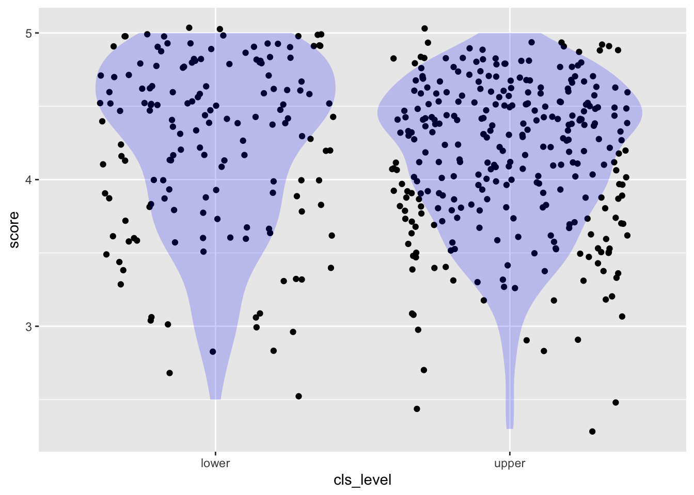
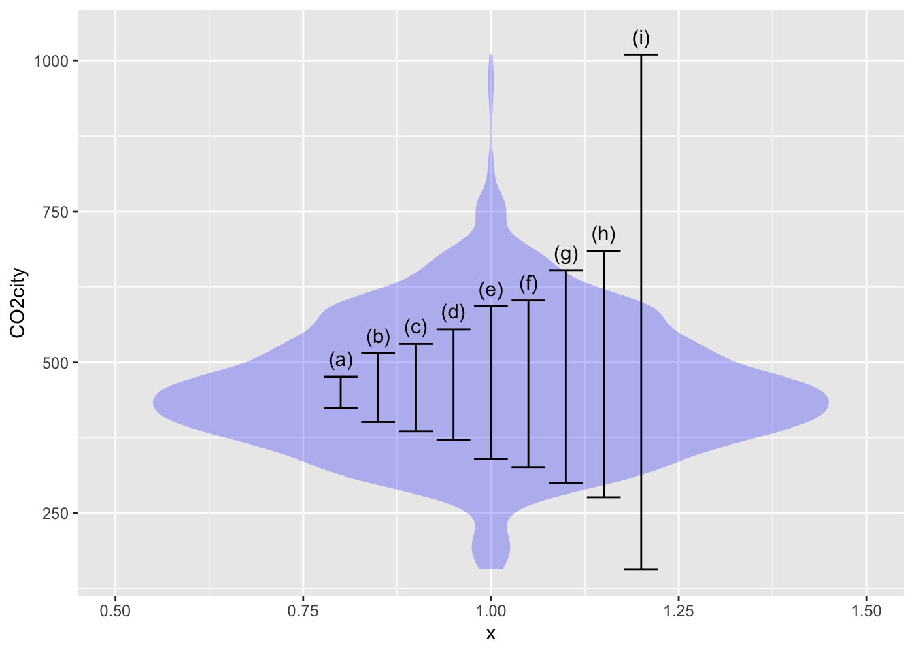
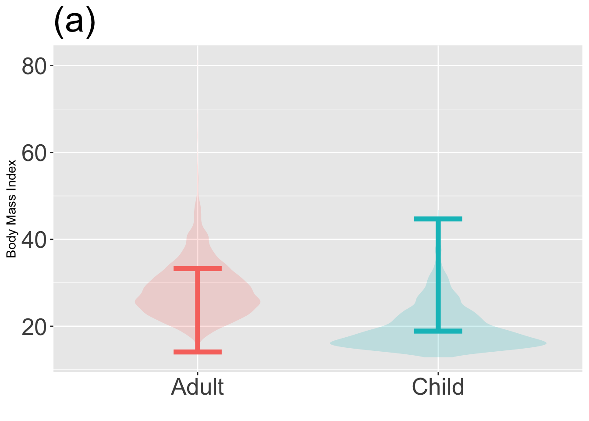

library(math300)
library(moderndive)
library(NHANES)Learning Checks Lesson 19
Setup
The math300 package will be needed for lessons 20 through 39.
19.1
Consider the moderndive::evals data that records students’ evaluations (score, on a 1-5 scale) of the professors in each of several courses (the course ID), as well as the age, “average beauty rating” (bty_avg) of the professor, enrollment in the course (cls_students) and the level o the course (cls_level). Each row in the data frame is an individual course section.
| ID | score | age | bty_avg | cls_students | cls_level |
|---|---|---|---|---|---|
| 329 | 2.7 | 64 | 2.333 | 22 | upper |
| 313 | 4.2 | 42 | 2.667 | 86 | upper |
| 430 | 4.5 | 33 | 5.833 | 120 | lower |
| 95 | 4.2 | 48 | 4.333 | 33 | upper |
| 209 | 4.8 | 60 | 3.667 | 34 | upper |
| 442 | 3.6 | 61 | 3.333 | 39 | lower |
| 351 | 4.6 | 50 | 3.333 | 26 | lower |
| 317 | 3.7 | 52 | 6.500 | 44 | upper |
| 444 | 4.1 | 52 | 4.500 | 111 | lower |
| 315 | 3.8 | 52 | 6.000 | 88 | upper |
The following commands model score versus age and plots the data as a point plot.
lm(score ~ age, data = moderndive::evals) %>% coefficients() (Intercept) age
4.461932354 -0.005938225 openintro::evals %>% gf_point(score ~ age, alpha=0.2 )
- Explain why some of the dots are darker than others?
Solution
All the ages have integer values—e.g., 43, 44, 45—so the dots line up in vertical lines.
Similarly, the scores have values only to one decimal place—e.g., 3.1, 3.2, 3.3—so the dots line up in horizontal lines. If there are two or more rows in evals that have the same age and score, the dots will be plotted over one another. Since transparency (alpha = 0.2) is being used, points where there is a lot of overplotting will appear darker.
- Remake the plot, but using
gf_jitter()instead ofgf_point(). Explain what’s different about the jittered plot. (Hint: Almost all of the dots are the same lightness.)
Solution
openintro::evals %>% gf_jitter(score ~ age, alpha=0.2 )
“Jittering” means to shift each dot by a small random amount. This reduces the number of instances where dots are overplotted.
- Now make a jitter plot of score versus class level (
cls_level).- What do the tick-mark labels on the horizontal axis describe? Are they numerical?
- To judge from the plot, are their more lower-level than upper-level courses? Explain briefly what graphical feature lets you answer this question at a glance.
Solution
openintro::evals %>% gf_jitter(score ~ cls_level)
- The tick-mark labels are the levels of the categorical variable
cls_level. The are words, not numbers. - There are many more dots in the right column than in the left. Since
lowerlevel class are shown in the left column, there are fewer lower-level courses than upper-level courses.
The two columns of points in the plot you made in (3) are not separated by very much empty space. You can fix this by giving
gf_jitter()an argumentwidth=0.2. Try different numerical values forwidthand report which one you find most effective at making the two columns clearly separated while avoiding overplotting.Are the scores, on average, different for the lower- vs upper-level classes? It’s hard to get more than a rough idea of the distribution of scores by looking at the “density” of points. The reason is that the number of points differs in the two columns. But there is an easy fix: add a layer to the graphic that shows the distribution (more or less like a histogram displays a distribution of values). You can do this by piping the jitter plot layer into a geom called a “violin,” like this:
openintro::evals %>%
gf_jitter(score ~ cls_level) %>%
gf_violin(fill="blue", alpha=0.2, color=NA)
Explain how to read the violins.
19.2
The openintro::promotions data comes the the 1970s and records the gender of 38 people along with the result of a decision to promote (or not) the person. =
Chapter 2 of ModernDive suggests graphically depicting decision versus gender by using a bar plot. There are two ways to make the bar plot, depending on which variable you assign to the horizontal axis and which to the fill color.
promotions %>% gf_bar(~ decision, fill=~ gender)
promotions %>% gf_bar(~ gender, fill=~decision)

Plots like those in ?@fig-promotion-bars might be attractive or not, depending on your taste. What they don’t accomplish is to make sure which is the response variable and which the explanatory variable.
The choice of response and explanatory variables depends, of course, on what you are trying to display. But everyday English gives a big hint. For instance, you might describe the question at hand as, “Does gender affect promotion decisions.” Here, the variable doing the affecting is gender, and the outcome is the decision.
Modeling decision as a function of gender is easy once you convert the response variable to a zero-one variable. Like this:
mod <- lm(zero_one(decision, one="promoted") ~ gender, data = promotions)
coefficients(mod) (Intercept) genderfemale
0.8750000 -0.2916667 mosaicModel::mod_eval(mod) gender model_output
1 male 0.8750000
2 female 0.5833333- Explain what is the relationship between the model coefficients and the model outputs.
Solution
The coefficients tell how to calculate the model output. These coefficients say that the model output will be 0.875, but subtract 0.292 if the person is female.
The model outputs give the probability of being promoted for each of the two genders.
- Make this plot and explain what the red lines show. (We don’t expect you to be able to write the command to generate such plots on your own, but we do expect you to be able to interpret them.)
promotions %>%
gf_jitter(zero_one(decision) ~ gender, height=0.2, width=0.2) %>%
gf_errorbar(model_output + model_output ~ gender, data=mod_eval(mod),
color="red", inherit=FALSE) %>%
label_zero_one()
Solution
The red lines show the proportion of the people in each gender group who were promoted. The y-axis scale on the left refers to the zero-one encoding of decision, while the y-axis labels on the right make it easier to read off the numerical value of the proportion.
19.3
The mosaicData::Whickham data from comes from a survey of a thousand or so nurses in the UK in the 1970s. The data record the age of each nurse along with whether the nurse was still alive in a follow-up survey 20 years later (outcome).
Make this graph from the Whickham data:
gf_jitter(zero_one(outcome) ~ age, data = Whickham, alpha=0.3, height=0.1) %>%
label_zero_one() 
Explain in everyday language what the graph shows about the lives of humans.
Make the graph again, but leave out the
%>% label_zero_one(). Then explain whatlabel_zero_one()does.
Solution
The graph shows that young nurses tended to be alive at the 20-year follow-up, older nurses not so much.
%>% label_zero_one()adds an axis on the left of the graph showing that in the zero-one tranform ofoutcome, “Alive” is assigned the value 1 and “Dead” the value 0.
Solution
19.4
About the summarization of models. Pipe the model fit into any of four functions:
%>% coefficients()%>% broom::tidy()%>% rsquared()%>% confint()
REDO confint() so that the columns are named lower, middle, upper
Solution
19.5 (Obj. 19.3)
Calculation of a 95% coverage interval (or any other percent level interval) is straightforward with the right software. To illustrate, consider the efficiency of cars and light trucks in terms of CO_2 emissions per mile driven. We’ll use the CO2city variable in the math300::MPG data frame. The basic calculation using the mosaic package is:
df_stats( ~ CO2city, data = math300::MPG, coverage(0.95)) response lower upper
1 CO2city 276.475 684.525The following figure shows a violin plot of CO2city which has been annotated with various coverage intervals. Use the calculation above to identify which of the intervals corresponds to which coverage level.
- 50% coverage interval -A- (c)
- 75% coverage interval -A- (e)
- 90% coverage interval -A- (g)
- 100% coverage interval -A- (i). This extends from the min to the max, so you could have figured this out just from the figure.

19.6 (Obj 19.3)
The two jitter + violin graphs below show the distribution of two different variables, X and Y. Which variable has more variability?


Solution
There is about the same level of variability in variable A and variable B. This surprises some people. Remember, the amount of variability has to do with the spread of values of the variable. In variable B, those values are have a 95% prediction interval of about 30 to 65, about the same as for variable A. There are two things about plot (b) that suggest to many people that there is more variability in variable B.
- The larger horizontal spread of the dots. Note that variable B is shown along the vertical axis. The horizontal spread imposed by jittering is completely arbitrary: the only values that count are on the y axis.
- The scalloped, irregular edges of the violin plot.
On the other hand, some people look at the clustering of the data points in graph (b) into several discrete values, creating empty spaces in between. To them, this clustering implies less variability. And, in a way, it does. But the statistical meaning of variability has to do with the overall spread of the points, not whether they are restricted to discrete values.
19.7 (Objs. 19.3 & 19.4)
The graphs below show a violin plot of body mass index (BMI) for adults and children. One of the graphs shows a correct 95% coverage interval on BMI, the other does not.
Identify the incorrect graph and say what feature of the graph led to your answer.


Solution
Graph (b) is correct. In graph (a), you can see that the interval fails to include a lot of the low BMI children and extends too high. For adults, the graph (a) interval extends too far low and doesn’t go high enough.
19.E
There are two equivalent formats describing an interval numerically that are widely used:
- Specify the lower and upper endpoints of the interval, e.g. 7 to 13.
- Specify the center and half-width of the interval, e.g. 10 ± 3, which is just the same as 7 to 13.
Complete the following table to show the equivalences between the two notations.
| Interval | bottom-to-top | plus-or-minus |
|---|---|---|
| (a) | 3 to 11 | |
| (b) | 108 ± 10 | |
| (c) | 30 ± 1 | |
| (d) | 97 to 100 | |
| (e) | -4 to 16 |
Solution
- 7 ± 4
- 98 to 118
- 29 to 31
- 98.5 ± 1.5
- 6 ± 10
It’s a matter of judgement which format to use. The bottom-to-top notation highlights the range of the interval while the plus-or-minus notation emphasizes the center of the interval. As a rule of thumb, I suggest this:
- If the first two digits are different between the top and bottom of the interval, use the bottom-to-top notation. So, write 387 to 393. If the first two digits are the same, use plus-or-minus. For instancer, the ratio of the mass of the Earth to that of the Moon is 81.3005678 ± 0.0000027. This is easier to take in at a glance than the equivalent 81.3005651 - 81.3005708